我的 NAS 方案（硬件篇）
背景
首先说说我的需求，为什么打算组装 8 盘位的 NAS 呢？
第一是数据量的需求，作为一个老网民，经过十几年的积累，个人资料、照片、无损音乐、高清电影已经达到了几十T，硬盘数量也达到了十几个，原先 4 盘位的 HPE MicroServer Gen8 已经无法满足我的日常需求。第二是便利性的需求，之前被 HPE MicroServer Gen8 的颜值吸引，先后买了两台，数据分散存储在这两台机器里，很难随心所欲地放置，而且两台经常需要同时开机，一台 8 盘位机器维护会简便很多。第三是数据可靠性的考虑，4 盘位综合考虑性能成本可靠性的情况下，RAID5/RAIDZ 可能是最好的选择，但两台 4 盘位的机器组 RAID5/RAIDZ 远不如一台 8 盘位的组 RAID6/RAIDZ2 可靠。第四，为什么不用群晖，威联通等商业方案呢？贵是一个原因，其次是系统比较封闭，因为我的工作和云密切相关，对 Linux、Docker、Kubernetes 等技术也非常熟悉，通过开源方案搭建家用 NAS 是一个很吸引人的解决方案。
然后再说说我关注的几点：
- 盘位，至少 8 盘位，否则升级的意义不大，因为我已经有两台 4 盘位机器了
- 体积，我对体积很敏感，因为家里的空间有限，没有条件放置全尺寸机箱和刀片服务器，所以小钢炮是第一选择
- 成本：预算有限，不会为了完美而追求很贵的机箱，但为了颜值还是愿意多花一点钱，总之还是遵循垃圾佬的思维，花最少的钱买到最值得的东西
- 功耗：虽然不会 7*24 开机，而是随用随开，但是功耗仍然是我关注的一个方面
机箱选择
我云调研了市面上一些主流的 8 盘位机箱，最终过滤出以下几款，希望给感兴趣的朋友们做个参考。
银欣 CS381
从外部看做工挺好，前部有挡板，8 个 3.5 盘位（热插拔） + 4 个 2.5 盘位（需要固定在机箱内部），支持 M-ATX，支持 SFX 电源，支持 4 个全高扩展插槽，对我来说价格很贵，同时个头有点大，放置比较占地方，所以排除掉了。
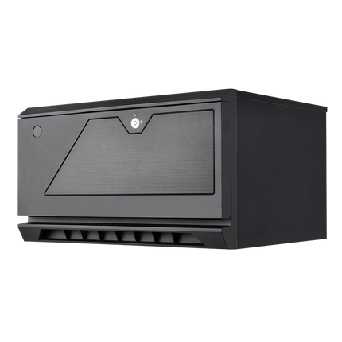
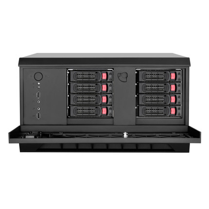
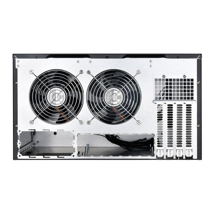
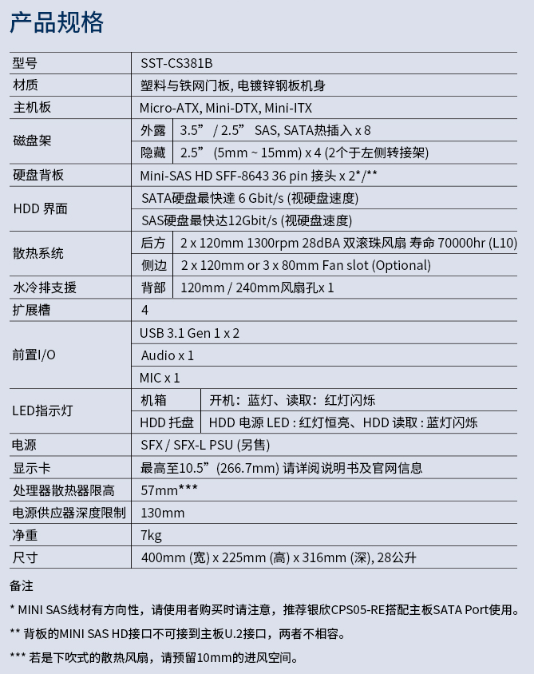
价格：2199 元，淘宝链接。
视频介绍：
- https://www.youtube.com/watch?v=kYJ491SRN2E&ab_channel=VedioTalk
- https://www.youtube.com/watch?v=JI-hbHG_HDc&t=602s&ab_channel=%E5%8F%B8%E6%B3%A2%E5%9B%BE
推荐指数：★★★☆☆
银欣 CS380
银欣 CS380 最大的优势就在于可以使用 ATX 主板，支持 7 个扩展槽，扩展性很强，可以选择标准 ATX 电源，相对于 MATX/ITX 方案来说，装机成本可以小很多。8 个 3.5 盘位，2 个 5.25 扩展槽位，可以再放两块硬盘。这款机箱的价格也可以接受，但个头实在太大了，对于我这种摆放空间有限，喜欢小钢炮的人来说不太合适。
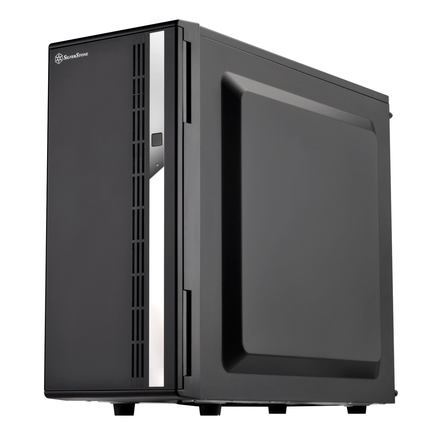
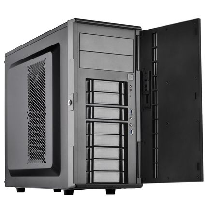
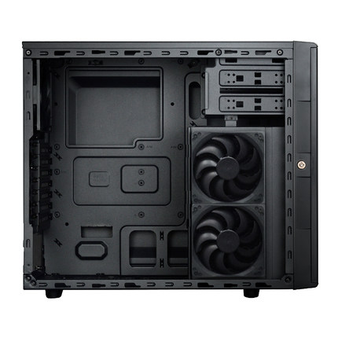
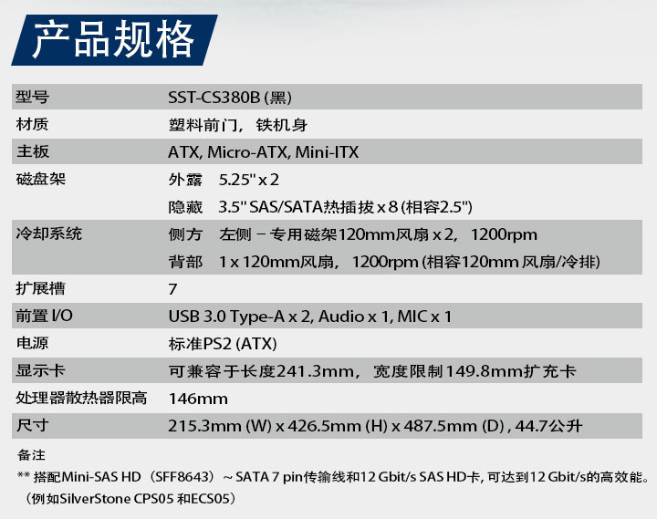
价格：949 元，淘宝链接。
视频介绍：
推荐指数：★★★☆☆
银欣 DS380
相对于以上几款机箱方案来说，DS380 更侧重于存储，8 个 3.5 盘位插槽，机箱内部可以再装 4 个 2.5 硬盘，支持 ITX 主板，扩展性一般，八百多的价格还算不错，配合银欣 ST30SF 300W SFX 电源，比较推荐，适合注重机箱体积而不那么在意扩展性的朋友，不过要注意的是这款机箱纵深略长，可以根据具体空间情况选择。
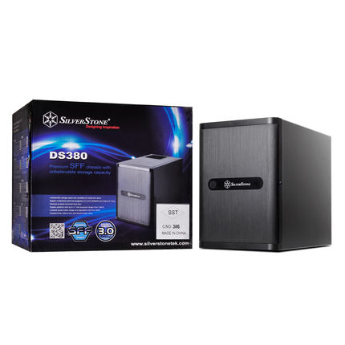
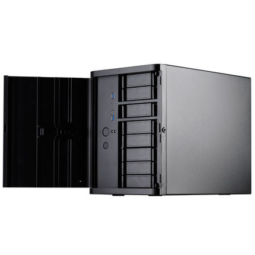
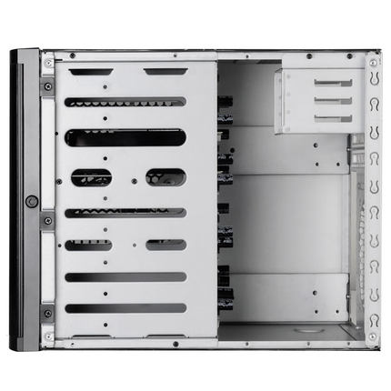
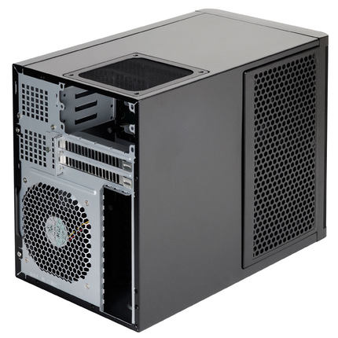
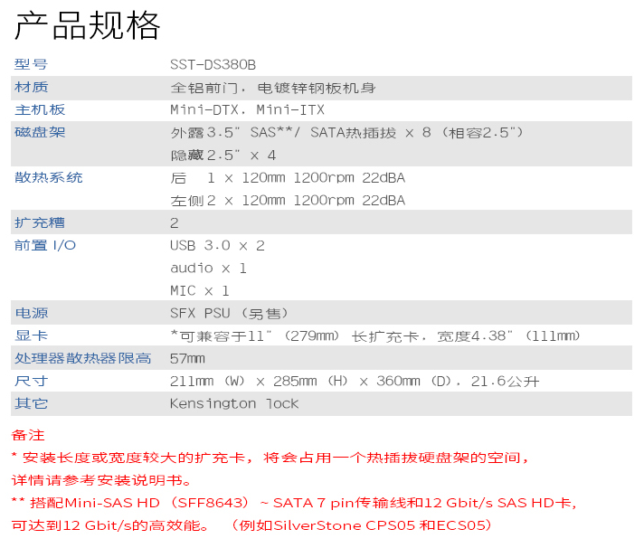
价格：859 元，淘宝链接
视频介绍：
推荐指数：★★★★☆
万由 810A
优点就不多说了，体积小巧，8 个 3.5 盘位插槽，内部可以再装 1 个 2.5 硬盘，板材做工比银欣要好，支持 M-ATX 主板，支持 2 个全高扩展插槽，作为纯 NAS 使用非常合适。但相对于上面几款缺点也很明显，机箱价格略贵，只能装小 1U 电源，市面上小 1U 电源选择实在太少，全新电源价格相对标准 ATX 或 SFX 来说还是要贵很多（嘿嘿，垃圾佬当我没说），但考虑到体积因素也可以接受。为什么我没有选择这款机箱呢？价格是一个方面，自己的使用环境，灰尘还是比较多的，这款机箱主面板用了碳纤维材质，个人担心容易落灰，打理起来比较麻烦，所以放弃了这这款机箱，如果有自己的机柜，带玻璃门那种的话会好太多。
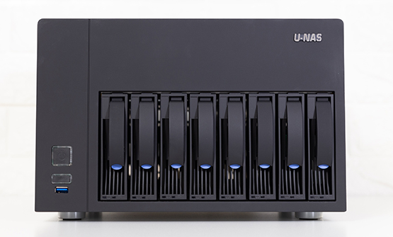
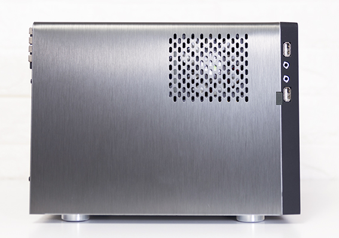
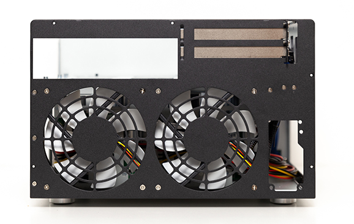
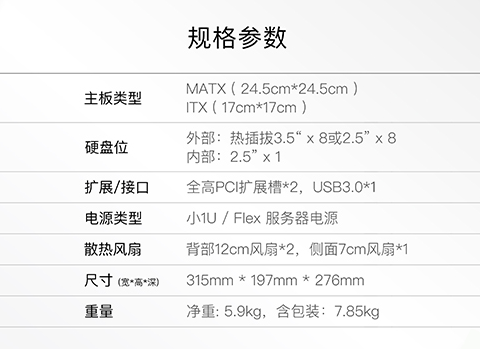
价格：1358 元，淘宝链接。
视频介绍：
- https://www.youtube.com/watch?v=WkAfFso0Igo&ab_channel=VedioTalk
- https://www.youtube.com/watch?v=1gCKWVjxctg&ab_channel=VedioTalk
- https://www.youtube.com/watch?v=_ve0km0fAzM&ab_channel=BIGDONGDONG
推荐指数：★★★★★
山寨工控机箱（蜗牛星际）
体积小巧，既可以横置也可以纵置，8 个 3.5 盘位，机箱内部勉强能塞下 1~2 个 2.5 硬盘，支持 ITX 主板 (17cm*17cm)，1 个全高扩展插槽，只支持小 1U 电源，做工中规中矩。最大的优点是什么呢？便宜！便宜！便宜（土豪请鄙视我）！综合考虑后我最终选择了这款。
真正用的时候还是有很多要注意的地方：
- CPU 散热器一定不要超过 4cm，否则装不进去，会被硬盘位挡住
- 自带的两个机箱风扇默认最大转速运行，且不支持自动调速，噪音极大，必须换成静音风扇
- ITX 主板注意尺寸，要买 17cm*17cm 的，如果像我一样不小心买到 17cm*19cm 的，还想用扩展卡，呵呵，那么只能扔掉重买了
- 开放式的硬盘插槽，容易进灰，需要加防尘网，但是前面板是铝合金材质的，不能用磁帖，只能用其他方式固定
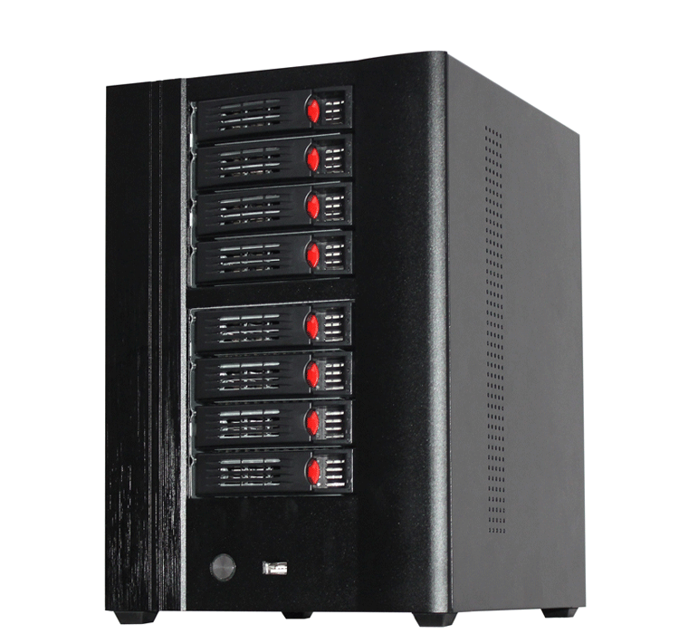
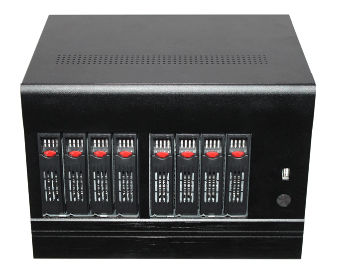
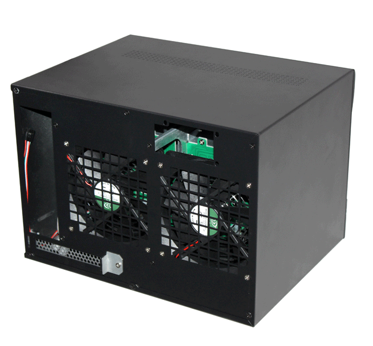
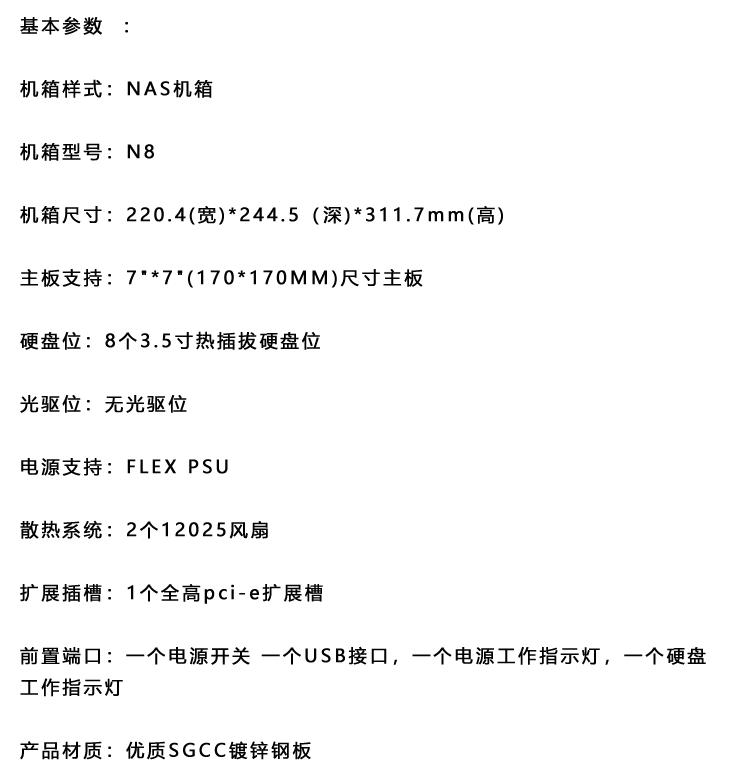
价格：460 元，淘宝链接
推荐指数：★★★★★
主机配置
和大部分装机流程不同的是，我先选择机箱，再选择主板方案，因为机箱的选择实在是太难，而主板 CPU 的选择相对就容易很多。而我又对盘位和机箱体积要求比较高，所以先确定机箱，会少走很多弯路，节省很多时间。
围绕配置选择，考虑的因素有：
- 主板尺寸：我选择的这款工控机箱，只支持 17cm*17cm 主板，所以只能选择 ITX 方案。
- Intel 还是 AMD：因为个人对 Intel 比较熟悉，再加上信仰原因，所以只考虑 Intel。我选择了 Intel 4 代 CPU (Haswell, Socket 1150)，4 代的可玩性很高，从 20 元的 G1820 到 400 元的 i7 4790，再到 E3 Xeon 服务器 CPU，可选择的空间很大。
- 是否需要服务器主板和 ECC 内存：如果对数据可靠性要求极高，需要 ECC 内存的支持，预算比较宽裕的话还是建议上服务器主板 + ECC 内存，但相对于高昂的价格，带来肉眼不可见的数据可靠性的提升，个人认为现实意义有待于讨论。可根据实际情况去选择。
参考配置
作为一个垃圾佬，CPU、主板当然不会买全新的了，标注的价格是海鲜市场的价格，但只作为一个参考，实际因为成色、运气、时间等因素，价格可能有所差距。
配置一（ITX）
- CPU
- i7 4790t 580元 （不推荐）
- e3 1265l v3 225元 （性价比高）
- 主板
- 映泰 H81 MDV5 130元 (17cm*19cm，尺寸问题，我的机箱放不下)
- 梅捷 H81N 158元 (17cm*19cm，尺寸问题，我的机箱放不下)
- 微星 H81i 198元 (17cm*17cm)
- 华硕 H81i-Plus 220元 (17cm*17cm)
- 内存
- DDR3 8G * 2 200元
- 扩展
- LSI9211-i8 HBA 直通卡 2008 芯片 100元
- Intel 82576 芯片双口千兆网卡（选配） 80元
- 电源
- 全汉 FLEX 小1U 300W 150元
参考：https://www.youtube.com/watch?v=Do3CDNGxpEE&ab_channel=%E5%8F%B8%E6%B3%A2%E5%9B%BE
配置二（ITX ECC）
追求稳定性的朋友可以上服务器主板：
- CPU
- Xeon E3 1235L v5 560元
- 主板
- 永擎 C236 WSL 1600元
- 内存
- DDR4 ECC 8G * 2 500元
- 其他同上
参考：https://www.youtube.com/watch?v=iN_unArno0Y&ab_channel=%E7%BF%BC%E7%8E%8B
配置三（ATX ECC）
如果空间和功耗不是问题，可以选择 ATX 方案（参考司波图大哥的配置）。
- CPU
- e5 2650 v2 58元
- 主板
- 华硕 Z9PA-U8 （2011针单路服务器主板） 500元
- 内存
- DDR3 REG ECC 4G*8=32G 24*8=192元
- 扩展
- MIO 专用接口声卡
- 索泰 GTX1060 3G ITX 显卡
- 富士通 OEM i350 四口千兆网卡
- TG-NET OEM 82599es 芯片双光口万兆网卡
- NVME 转接卡
参考：https://www.youtube.com/watch?v=Do3CDNGxpEE&ab_channel=%E5%8F%B8%E6%B3%A2%E5%9B%BE
硬件选择细节
CPU 与主板
CPU 与主板的兼容性可以在 CPU-Upgrade 网站里查询。例如：
一些主流服务器的升级信息也可以在 IT Connected 网站里获取。例如：
Intel 4代 CPU 列表：
内存
非 ECC、纯 ECC、REG ECC，根据个人条件选择，我最终选择是普通非 ECC 内存。
注意纯 ECC 内存大部分 Intel 家用主板也是可以使用的，二手价格与非 ECC 也差不了多少，所以以后如果有升级服务器主板的打算的话，可以直接买纯 ECC。有些 AMD 主板也支持 REG ECC，因为对 AMD 研究不深所以不做推荐，知道的朋友可以分享一下经验。
硬盘
硬盘方案有：
- 全新 SATA
- 普通 CMR 西数蓝盘、紫盘、希捷酷鹰：性价比高，如果不要求 7 * 24 开机，推荐选择，但目前能买到的 CMR 家用盘已经越来越少了，只能选监控盘，监控盘适合持续写入，吞吐量没有普通盘高，不在意吞吐量的可以购买。
- NAS 专用 CMR 西数红盘、希捷酷狼：注重性能和可靠性，如果对 NAS 的性能要求比较高，需要 7 * 24 小时开机，并且不差钱的，那么推荐选择。
- SMR：永远不推荐，除非是有处女情结，只考虑全新，但是手头又不宽裕，或者只把硬盘当光盘一样一次性写入保存冷数据的场景。
- 二手服务器 SATA：SATA 接口因为比较通用，所以二手市场鱼龙混杂，翻车的几率比较大，不是很推荐。
- 二手服务器 SAS：一般都是服务器退役下来的，便宜质量还很好，但是一定要组 RAID，或者仅作为非单一副本的冷备使用。商家也要选择比较靠谱的。（参考： https://post.smzdm.com/p/akx4edq8/，https://www.zhihu.com/question/511670585/answer/2311928845）
我的计划是，主要数据用 8 块二手的 SAS 盘组 RAIDZ2/RAID6 存放，然后按照数据集周期性同步至不同的全新 SATA 盘作为冷备，额外几块二手 SAS 盘作为冷备的副本，周期性地运往不同的地域做跨地域备份。
数据备份 321 原则：同一数据至少保留 3 份（包括原数据）；保存到 2 种以上存储介质（比如光盘和硬盘）；至少有 1 份异地备份（本地灾难后还可恢复）。
HBA 直通卡
HBA 卡的使用场景：
- 在家用主板上使用 SAS 硬盘：家用主板是没有 SAS 控制器的，这时候 HBA 卡作为一个 SAS 控制器连接 SAS 硬盘。
- 扩充硬盘接口：大部分主板只有 4 个 SATA 接口，如果你使用 SATA 盘的数量超过主板提供的接口数量，就可以通过 HBA 卡扩充接口。
抄下淘宝卖家的说明：
LSI 9205 9217 9207主控芯片都是SAS2308,性能是一样的！
LSI的主流的直通卡从 2008-2308-3008：
- LSI 2008 常见型号：DELL H200 H310 / IBM 1115 1015 / LSI 9240 等
- LSI 2308 常见型号：LSI 9217/9207 HP 9205 /浪潮超微2308 等
9217=2308 IR模式 9207=2308 IT模式（同级别的 2308卡，IR模式就等于9217 IT模式就等于9207）
性能主要参数对比
6GB直通卡（6GB的直通HBA卡，基本就是基于这两个芯片的）
- LSI 9211-8i（SAS 2008）PCIe 2.0 533Mhz 处理器
- LSI 9207-8i（SAS 2308）PCIe 3.0 800Mhz 处理器
6GB RAID卡（6GB的直RAID卡，基本就是基于这两个芯片的）
- LSI 9260-8i（SAS 2108）PCIe 2.0 单核 800Mhz 512M DDR2高速缓存
- LSI 2308（SAS 2308）PCIe 3.0 双核 800Mhz 512M DDR3高速缓存
LSI SAS2308第2代8端口6Gb/s SAS控制器的模块图，相对于第1代的LSI SAS2008主要的变化是：系统总线接口由PCI Express x8 2.0（5Gb/s）升级为x8 PCIe 3.0（每个lane的速率为8.0Gb/s全双工，实际效率比2.0提升一倍），另外集成的PowerPC 440处理器频率由533MHz提升到800MHz。比DELL H200 IBM M1015（LSI 9211 9200 等）高一个档次。
我选择的是 2008 芯片的 LSI 9211-8i，相对于 2308 发热更小。
装机过程
（占位，改日上图）
完成图
装好后用了半年才拍的照片，所以有点点灰尘：
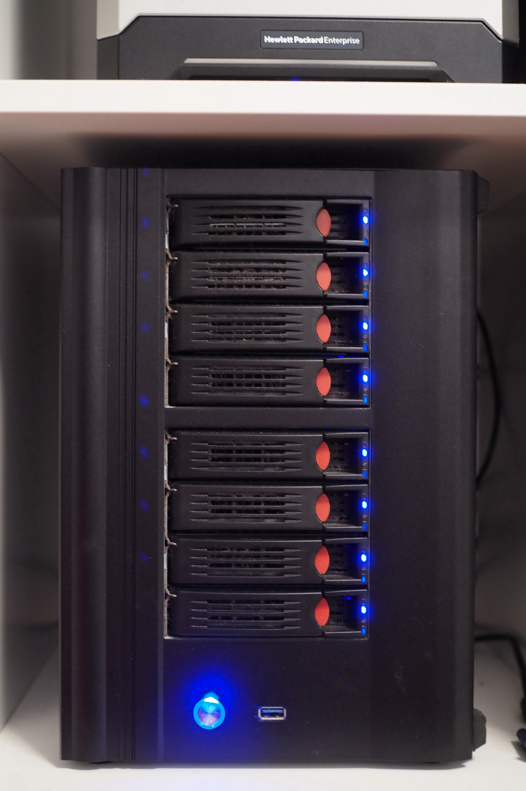
顺便晒一下我的两台 Gen8：
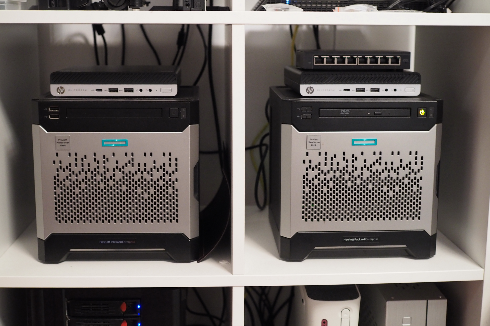
还有两台 1L 小主机：
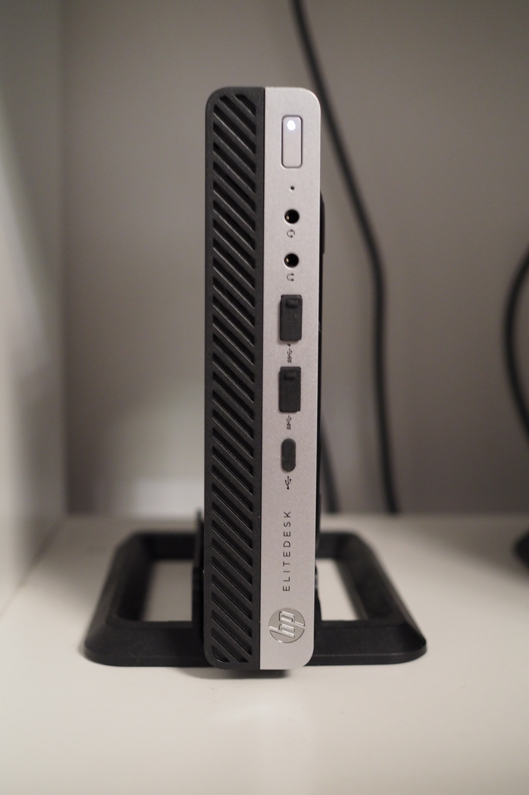
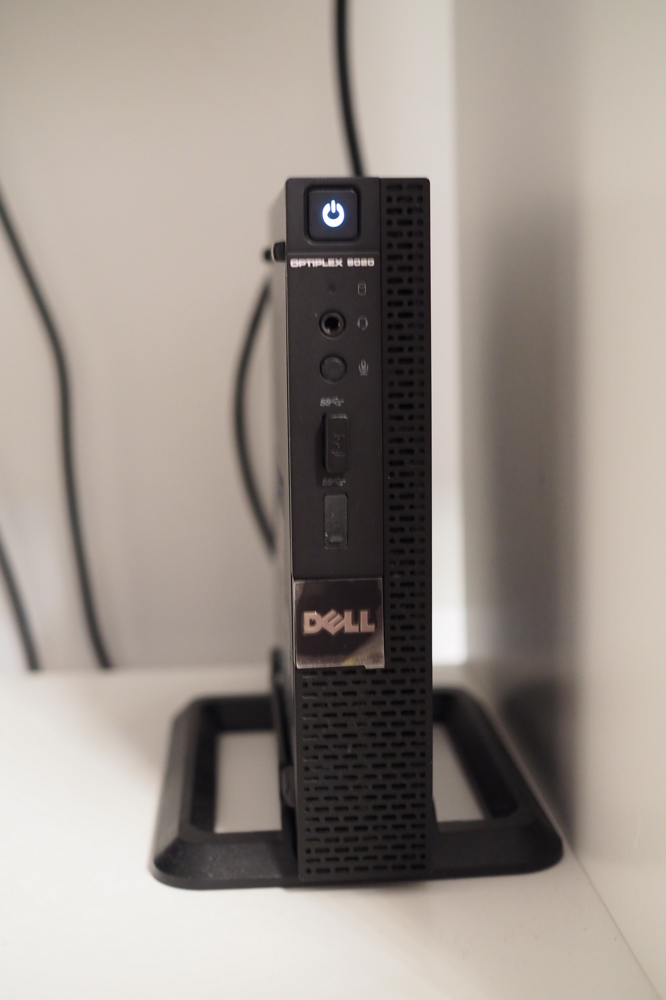
改天再做介绍。
功耗
理论功耗
- 主板：10W
- CPU：E3 1265L V3，TDP 45W
- 硬盘：SAS*8，15W*8=120W
- SAS卡：15W
总计：185W
实测功耗
- 启动峰值功耗：190W
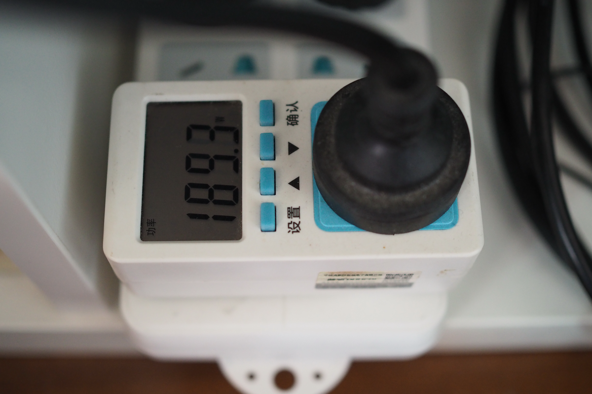 - 待机功耗：120W
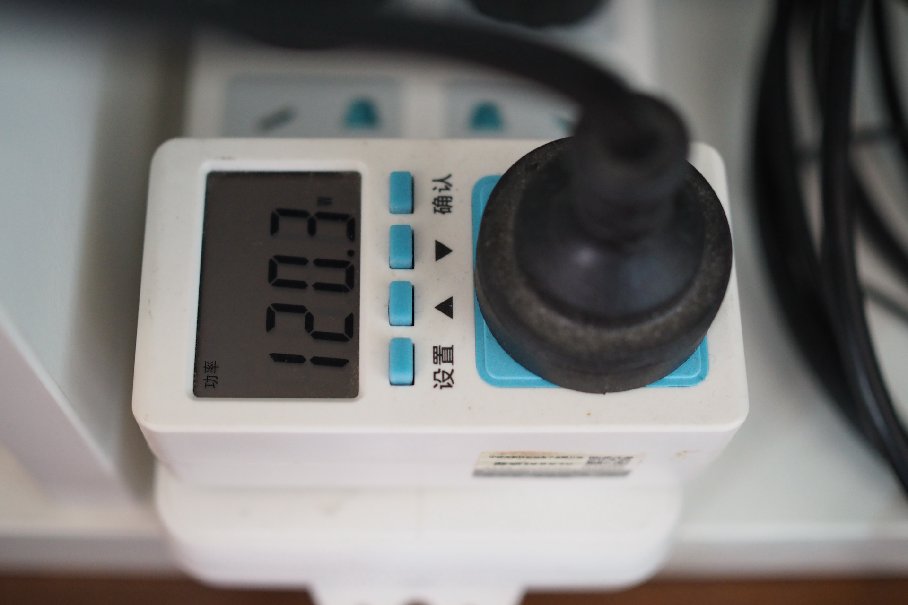 - 待机功耗（spin down）：42W
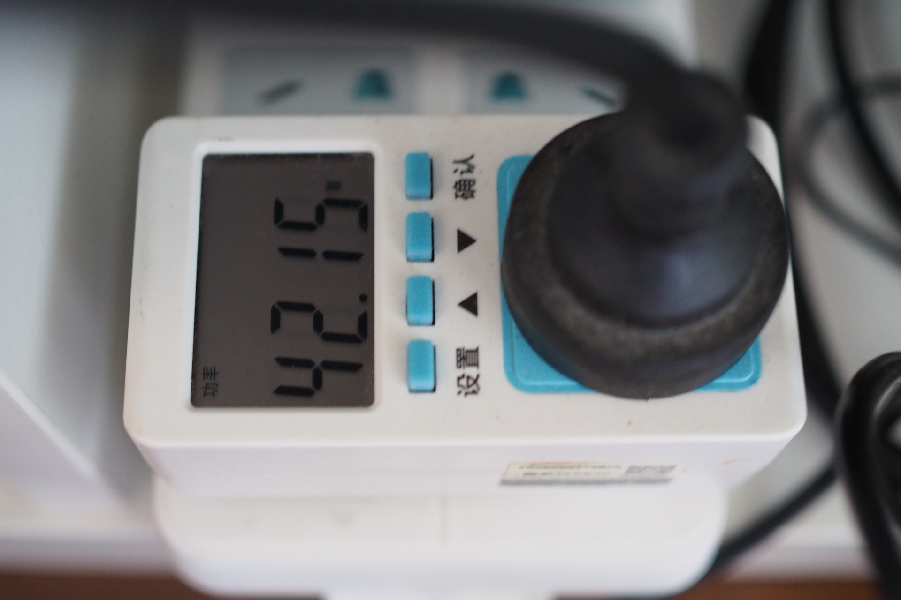 - 工作功耗：150W
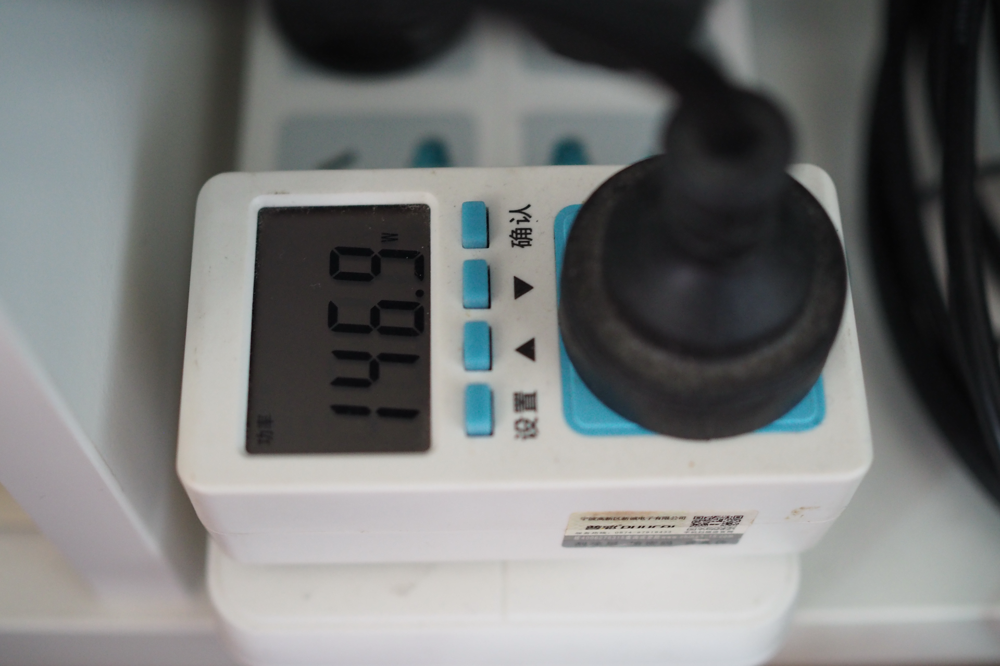